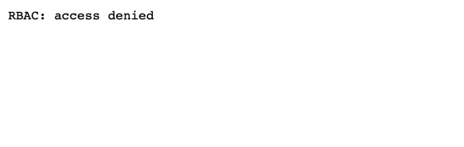
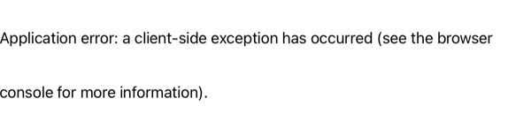

Access Policies
In this chapter we will create and apply access policies that will restrict access to services in Gloo Mesh Clusters and VM.
Ensure Environment¶
Navigate to Tutorial home
cd $TUTORIAL_HOME
Set cluster environment variables
source $TUTORIAL_HOME/.envrc
Enable Global Access Policy¶
The Virtual Mesh that we crated in earlier as the globalAccessPolicy disabled, run the following command to verify the state of the same,
kubectl --context="$MGMT" get virtualmeshes.networking.mesh.gloo.solo.io -n gloo-mesh bgc-virtual-mesh -o json | jq '.spec.globalAccessPolicy'
Now lets enable the globalAccessPolicy by running the following command,
$TUTORIAL_HOME/bin/17_toggle_mesh_access_policy.sh
As soon as the globalAccessPolicy is enabled you should see no traffic.
Now running the following command again should return a response ENABLED,
kubectl --context="$MGMT" get virtualmeshes.networking.mesh.gloo.solo.io -n gloo-mesh bgc-virtual-mesh -o json | jq '.spec.globalAccessPolicy'
Lets verify if we are able to access the service,
$TUTORIAL_HOME/bin/call_bgc_service.sh "${CLUSTER1}"
The command should show an output like:
RBAC: access denied
Note
Refreshing the browser should also return RBAC: acccess denied as shown

By default the moment we enable globalAccessPolicy the Gloo Mesh create allowNone with out any access policy associated with the resource, hence you the RBAC: access denied as output when calling the service.
Enable Access¶
Ingress Traffic via Istio¶
Let us now allow the traffic via Istio Ingress Gateway,
$TUTORIAL_HOME/bin/18_enable_access_via_ingress.sh
Let us try polling the service,
$TUTORIAL_HOME/bin/poll_bgc_service.sh "${CLUSTER1}"
The command should show the output from the service:
###################################################
Polling Service URL 35.244.63.221/api
###################################################
{
"color": "blue",
"count": 476,
"greeting": "Namaste 🙏🏽",
"pod": "blue-98db67777-797t7",
"textColor": "whitesmoke",
"userAgent": "HTTPie/2.5.0"
}
{
"color": "blue",
"count": 477,
"greeting": "Namaste 🙏🏽",
"pod": "blue-98db67777-797t7",
"textColor": "whitesmoke",
"userAgent": "HTTPie/2.5.0"
}
RBAC: access denied
{
"color": "green",
"count": 2173,
"greeting": "Bonjour 👋🏽",
"pod": "green-7d9f5f4b47-rcb76",
"textColor": "whitesmoke",
"userAgent": "HTTPie/2.5.0"
}
{
"color": "green",
"count": 2174,
"greeting": "Bonjour 👋🏽",
"pod": "green-7d9f5f4b47-rcb76",
"textColor": "whitesmoke",
"userAgent": "HTTPie/2.5.0"
}
As you noticed the command shows one RBAC: access denied, that is from the VM Canary service.
Note
If you are using the browser then you might see as shown, which is related to no Access to VM. 
Checking the Istio logs on the VM will show rbac_access_denied_matched_policy,
vagrant ssh -c "sudo tail -f /var/log/istio/istio.log"
[2021-10-02T05:39:53.720Z] "GET /api HTTP/1.1" 403 - rbac_access_denied_matched_policy[none] - "-" 0 19 0 - "172.17.0.1" "Mozilla/5.0 (Macintosh; Intel Mac OS X 10_15_7) AppleWebKit/605.1.15 (KHTML, like Gecko) Version/15.0 Safari/605.1.15" "91dfed15-3288-469b-ad93-38a5a6af10f3" "34.93.158.36" "-" inbound|8080|| - 192.168.68.119:8080 172.17.0.1:0 outbound_.8080_.version-canary_.blue-green-canary.vm-blue-green-canary.svc.cluster.local -
Allow Traffic to VM¶
What we did right now is allowing traffic from the Gloo Mesh Clusters and the traffic from and to vm is still blocked. Now let us now apply the Access policy that will allow the traffic to the VM,
$TUTORIAL_HOME/bin/19_enable_access_to_vm.sh
Let us try polling the service agian or you could refresh the browser,
$TUTORIAL_HOME/bin/poll_bgc_service.sh "${CLUSTER1}"
The command should now include the output from the canary(VM) version of service as well,
{
"color": "green",
"count": 2175,
"greeting": "Bonjour 👋🏽",
"pod": "green-7d9f5f4b47-rcb76",
"textColor": "whitesmoke",
"userAgent": "HTTPie/2.5.0"
}
{
"color": "blue",
"count": 478,
"greeting": "Namaste 🙏🏽",
"pod": "blue-98db67777-797t7",
"textColor": "whitesmoke",
"userAgent": "HTTPie/2.5.0"
}
...
{
"color": "yellow",
"count": 197,
"greeting": "Hola ✋🏽",
"pod": "vm-192.168.68.114",
"textColor": "black",
"userAgent": "HTTPie/2.5.0"
}
Access service from VM¶
Let us now check if we are able to access the service from the VM,
vagrant ssh -c "http blue-green-canary.blue-green-canary.svc.cluster.local:8080/api"
As expected we got RBAC: access denied as we are yet to allow the traffic from the VM to the cluster,
HTTP/1.1 403 Forbidden
content-length: 19
content-type: text/plain
date: Thu, 23 Sep 2021 16:29:22 GMT
server: envoy
x-envoy-upstream-service-time: 269
RBAC: access denied
Let us allow the VM to access the services on the Cluster,
$TUTORIAL_HOME/bin/20_enable_access_from_vm.sh
Now trying again to access the service from VM should show a successful response,
vagrant ssh -c "http blue-green-canary.blue-green-canary.svc.cluster.local:8080/api"
HTTP/1.1 200 OK
content-length: 129
content-type: application/json; charset=utf-8
date: Thu, 23 Sep 2021 16:32:22 GMT
etag: "81-44uxFMXdXGKizzXNw4AXYnD7xj0"
server: envoy
vary: Accept-Encoding
x-envoy-upstream-service-time: 285
{
"color": "yellow",
"count": 198,
"greeting": "Hola ✋🏽",
"pod": "vm-192.168.68.114",
"textColor": "black",
"userAgent": "HTTPie/2.5.0"
}
Volià! We have successfully enabled the Access Policies on our Gloo Mesh cluster enabling traffic via Ingress to services on the Cluster and VM.